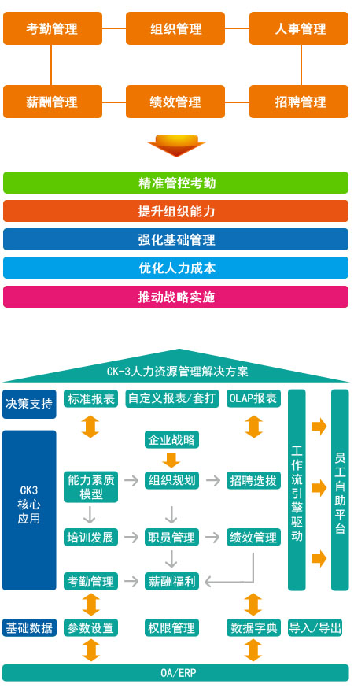

HR信息系统
产品介绍
CK3软件平台于2003年推出的HR管理软件产品，旨在帮助客户通过软件平台实现全自动的流程管理，为企业实现人力资源专业化、精细化管理。
服务内容

* EHR,前瞻务实的管理理念
eHR最大的特点是融入了仕邦在人力资源管理咨询服务领域的实战经验，以前瞻性的管理思想为开发指导，结合客服的人力资源管理现状，搭建先进的人力资源管理体系，确保企业的高速成长需要。基于管理理念开发的eHR不仅确保人力资源管理持续高效地进行，而且帮助人力资源部门实现由企业成本中心向利润中心的转变。
仕邦保证了人力资源管理的理念和软件产品的设计理念是一致的，形成了“1+1> 2”的效果，受益最大的正是实施eHR项目的企业。
仕邦保证了人力资源管理的理念和软件产品的设计理念是一致的，形成了“1+1> 2”的效果，受益最大的正是实施eHR项目的企业。